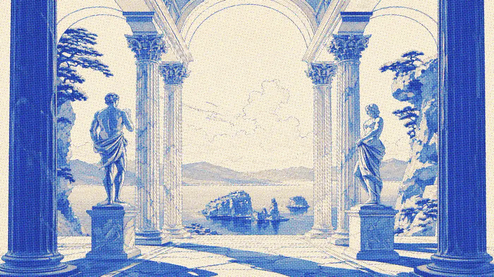
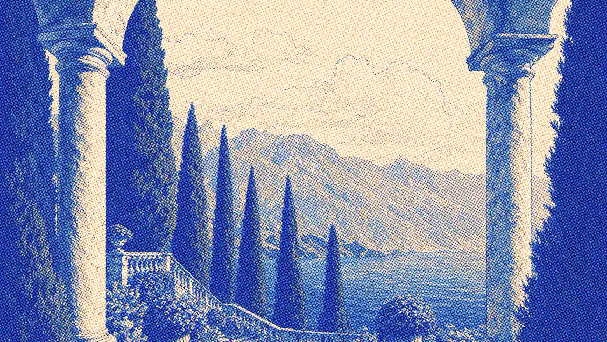

You saw a book. Then you forgot it.
Buki reads the cover, not the caption, and files it on a shelf that is yours. Any picture, anywhere on the web.
The gesture
Right-click a cover. That is the whole thing.
01
It looks at the picture
The cover and the words around it go to a vision model together, because the text beside a cover is often what makes a hard one legible.
02
It checks its own answer
The guess is confirmed against OpenLibrary rather than trusted. One photo can hold several books, and each one it can read gets its own decision.
03
You choose a pile
Now, Next, Someday. Nothing reaches the shelf until you say so, and every book keeps the page you caught it from.
A book with no cover art still gets a cover.
Catalogues have no art for a great many books, so Buki draws the rest: a dyed board, two stamped rules, and a weave hashed from the book itself. The same book always gets the same binding, and no two books get the same one.
These six are drawn by the code that ships in the extension, right here in your browser.

Every book scanner assumes the book is in your hands.
Buki is for the ones you will never hold. A cover in a post, a spine in a video thumbnail, a paperback on someone's desk in a photograph. If it is a picture in a browser, it is a book you can keep.
What it costs
Ten catches to find out, then four dollars.
Free
$0forever, no card
Enough to know whether it belongs in your browser.
- Ten cover photographs read for you
- Unlimited catches from a shop link
- The whole shelf, kept forever
- Bring your own recognition key and read as many as you like
No account. Nothing to cancel.
Get Buki freePro
$4a month, or $29 a year
For when you stop thinking about it and just catch books.
- Unlimited cover reading, and no key to go and fetch
- Faster, and it does not throttle
- Export to Goodreads and StoryGraph
- Sync and backup when it ships, included
Cancel whenever you like and you keep every book you caught.
Start with ten freeYour shelf never leaves your computer.
When you ask Buki to read a cover, the picture goes to Buki and on to the vision model, and the title it finds goes to OpenLibrary to confirm the book is real. That is everything that leaves. No account, no tracking, no analytics, and the shelf itself is stored in your browser. Read the privacy policy.
Saved books carry a Buy link. As an Amazon Associate, Buki earns from qualifying purchases at no extra cost to you. It appears only on books you have already chosen to save, and it never changes which books Buki shows you or in what order. You can point it at Bookshop.org instead.
Before you ask.
- Google Lens already does this, free.
- Lens tells you what the book is. It does not keep it. Close the panel and the answer is gone. Buki is the shelf, not the answer.
- Why pay when the source is open?
- You never have to. Bring your own recognition key and read as many covers as you like, forever. Pro is for people who would rather not hold a key at all.
- What happens if I stop paying?
- Every book you caught stays, opens, moves between piles and keeps its Buy link. The shelf is on your computer and it is yours. Only new reading stops.
- Will it get a book wrong?
- Sometimes, which is why nothing is saved without you choosing a pile. The shelf shows how often it was right, so you can judge it yourself.